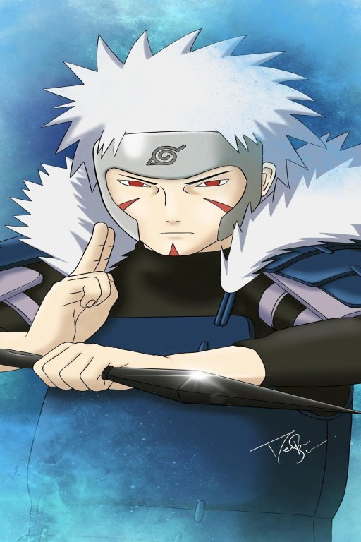
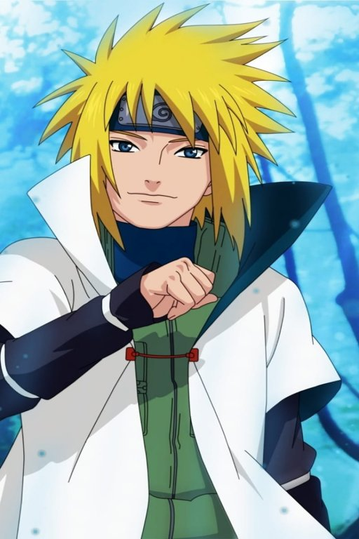
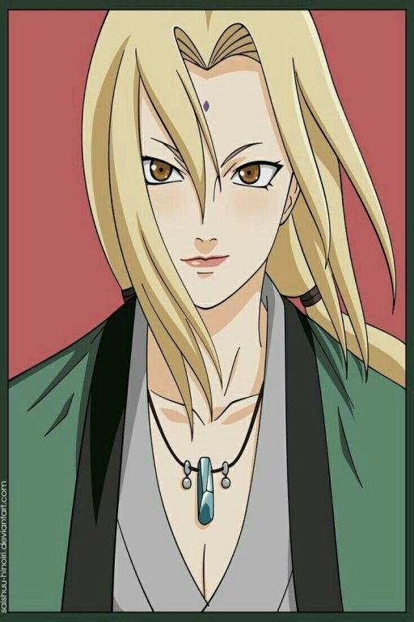
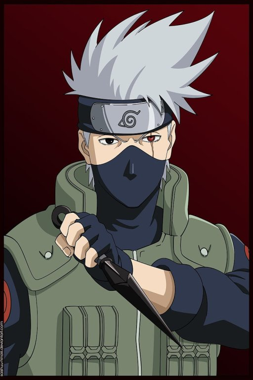
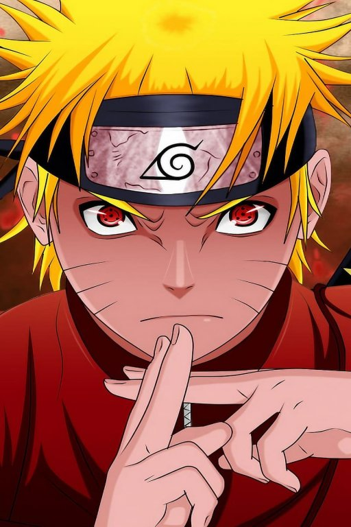

The Hidden Leaf Village is the first village that was ever formed by Shinobi. The Senju and Uchiha clan had been rivals for years before they came to an agreement with the help of Hashirama Senju and Madara Uchiha. The two of them built a village together and called it the HLV(Konoha).
The village head is called the Hokage and this position is usually given to the most powerful Ninja in the village. The Hokage of the Hidden Leaf village have been Hashirama Senju, Tobirama Senju, Hiruzen Sarutobi, Minato Namikaze, Tsunade Senju, Kakashi Hatake and Naruto Uzumaki. Danzo was supposed to be the sixth hokage but he was killed by Sasuke Uchiha.
 Hashirama Senju First Hokage |
 Tobirama Senju Second Hokage |
 Hiruzen Third Hokage |
 Minato Namikage Fourth Hokage |
 Lady Tsunade Fifth Hokage |
 Kakashi Hatake Sixth Hokage |
 Naruto Uzumaki Seventh Hokage |
I here by declare that I agree terms and conditions.